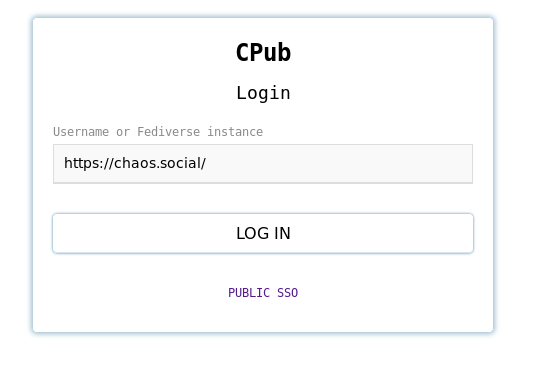

Hello SocialHub!
We have another little demo showcasing two things: Federated authentication and content-addressing.
The Demo consists of a ActivityPub(-esque) Server called CPub and a Web client called GeoPub.
A demo instance is up here: https://geopub.openengiadina.net/
Federated Authentication
CPub supports authentication with OpenID-Connect providers as well as with servers that implement the Mastodon OAuth API.
You can try this out by going to https://geopub.openengiadina.net/settings/ and click on the button “Authenticate with https://openengiadina.net/”. You will be redirected to following page where you can enter the url of your Pleroma or Mastodon server:

If you press “LOG IN” you will be directed to your instance where you will be authenticated and asked to grant CPub access to read your account (the read:accounts scope). This allows CPub to create a user that is linked to your Pleroma/Mastodon instance.
The auth* happens in two-hops. The client (GeoPub) requests authorization from a CPub instance. The CPub instance authenticates with an external service. This is because GeoPub still relies on CPub feature. Once we fully implement the ActivityPub Client-to-Server protocol, GeoPub will directly authenticate and use your instance (similar to how Pinafore works).
CPub can also be setup to authenticate with any OpenID-Connect provider. Currently we have setup authentication with PUBLIC SSO. We have tested it with GitLab, Keycloak and Azure AD.
Previous related discussions on SocialHub: Single Sign-On for Fediverse and Federating authentication.
Content-addressing
As previously mentioned we have been doing some fiddling around with content-addressing. This is now implemented in CPub and GeoPub.
The id of newly created content is not a URL pointing to some location but consists of a hash of the content-itself (as a URN). For example this “Hello World” note has the identifier urn:erisx:AAAABKIJ2AGOMGIBANWOBNH2WP4PDHX7VTTWBAZS5DFMETDISPENRVVASNARFE5VC3VYQJUEVQSL2X45IR7CUCWQYGY3PA6WSNTL7CFUYB3A.
This allows the content to be stored and transported in many different ways (IPFS, a USB stick, …). For the moment you can also use the CPub objects endpoint: https://openengiadina.net/objects/?iri=urn:erisx:AAAABKIJ2AGOMGIBANWOBNH2WP4PDHX7VTTWBAZS5DFMETDISPENRVVASNARFE5VC3VYQJUEVQSL2X45IR7CUCWQYGY3PA6WSNTL7CFUYB3A
This allows pretty neat things such as:
- A client can compute the identifier of newly created content on it’s own and can only forward the content to a server at a (much) later time. This enables offline-first clients.
- The authenticity of content can be directly verified by recomputing the identifier.
- Mutable content (such as a website) can be cached (go here and hit “Load more data” to see how this might work).
There are also some things that suddenly become impossible: If the server changes the content of the activity when it is posted (add the correct actor, or published date) this will change the identifier of the content. This might cause problems and currently CPub does not allow any content to be posted that it would have to change. In particular bcc and bto are not supported by CPub.
Anyways, give it a try and let me know what you think. Currently GeoPub only supports liking, so like away…